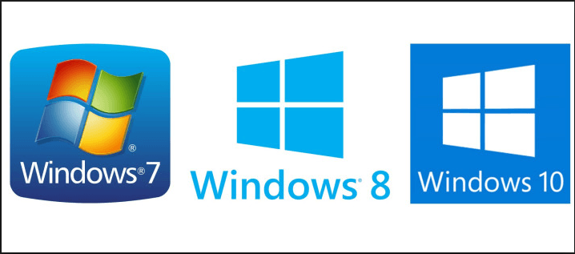

La versión anterior del sistema operativo Windows, conocida como Windows 8, es probablemente junto con Windows Vista, la que menos tiempo se ha mantenido vigente en el mercado. A pesar de que pretendía ser un parteaguas en la historia de los sistemas operativos Windows, al introducir la novedosa interfaz Modern UI (también conocida como Metro), el abandono del conocido botón de inicio (utilizado desde Windows 95), fue tan criticado que tuvieron que reincorporarlo parcialmente en una actualización a la que llamaron 8.1. Sin embargo, eso no terminó por convencer a los usuarios y generó el incentivo necesario para que Microsoft renovara su principal producto de software.
De modo natural, esta versión debió denominarse Windows 9, pero no fue así. La decisión de la empresa por marcar un contraste con versiones anteriores los llevó a llamar Windows 10 a la nueva versión. Su característica más destacada, por supuesto, es el retorno del botón Inicio, pero combinado con la interfaz Modern UI en un intento por combinar y rescatar lo mejor de Windows 7 y Windows 8. Pero los programadores de Microsoft fueron mucho más allá: han creado un sistema operativo que pretender homogeneizar la interfaz de diversos dispositivos. Windows 10 busca crear una experiencia de uso funcional y sencilla tanto para computadoras de escritorio, como portátiles, teléfonos móviles y tabletas. Por ello, Windows 10 no sólo es apto para utilizarse ágilmente con un teclado y ratón tradicionales, sino también en pantallas táctiles de diverso tipo y tamaño. Además, incluye un buen número de novedades de los que daremos cuenta en esta unidad y que revisaremos con más detalle más adelante, como la incorporación de Edge, el nuevo navegador de Internet que sustituye a Internet Explorer, el uso por primera vez de escritorios virtuales (muy comunes entre usuarios de Linux), una nueva área de notificaciones del sistema llamada Centro de Actividades, la incorporación de un asistente personal llamado Cortana, etcétera.
Otro aspecto muy importante a destacar es que todos los usuarios de Windows 7, 8 y 8.1 podrán actualizar a la versión Home de Windows 10 de manera gratuita. Las computadoras nuevas vendrán con Windows 10 de fábrica, por supuesto, pero los usuarios de las versiones mencionadas pueden descargarlo a partir de agosto de 2015 y durante un año, hasta agosto de 2016, lo que resulta muy novedoso tratándose de Microsoft.

Demos un paseo rápido por las novedades de Windows 10 a reserva de profundizar en todas ellas a lo largo del curso. Si eres un usuario familiarizado con versiones anteriores de Windows, seguramente te resultará muy ilustrativo conocer los elementos que se han cambiado o han mejorado del sistema. Si, en cambio, crees que requieres conocer primero diversos elementos básicos del uso de Windows, entonces puedes ir directamente a la unidad dos, donde estudiaremos estos diversos temas con más extensión y detalle.